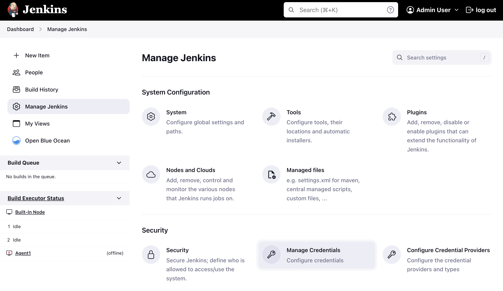
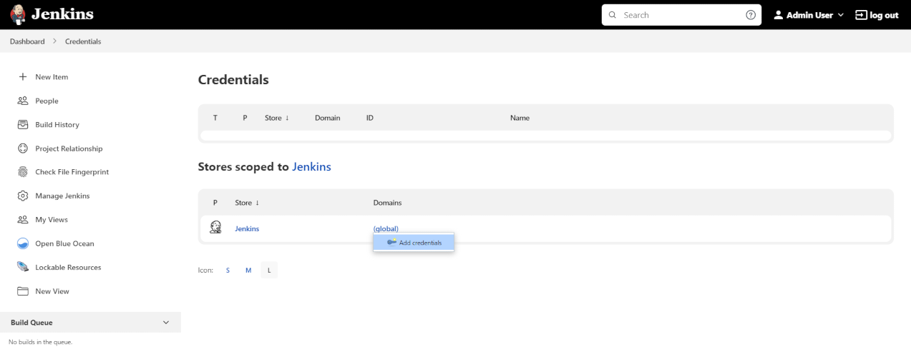
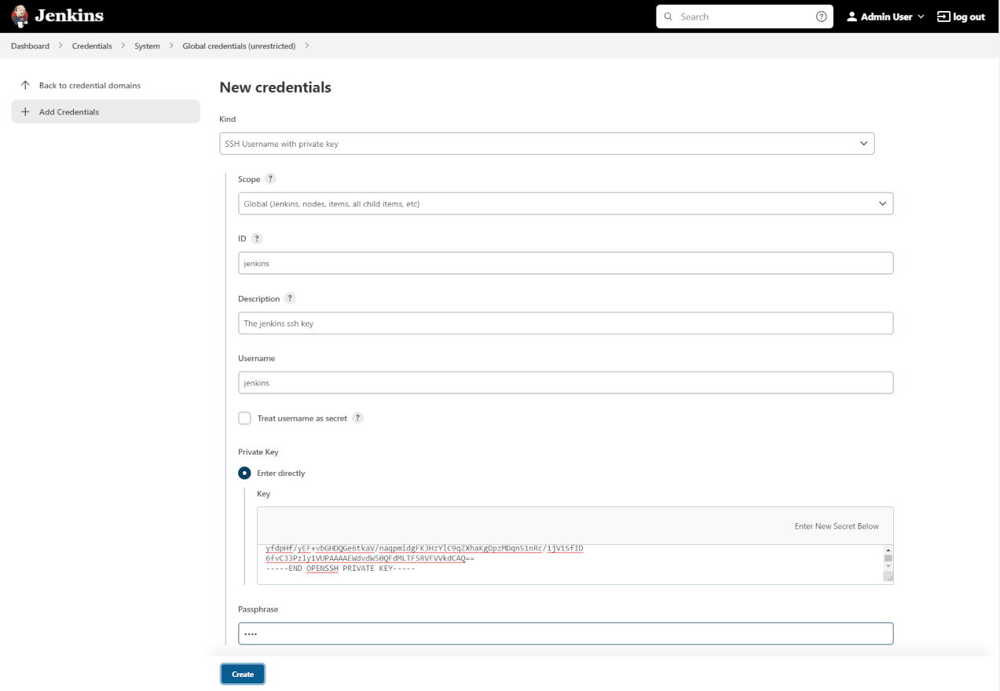
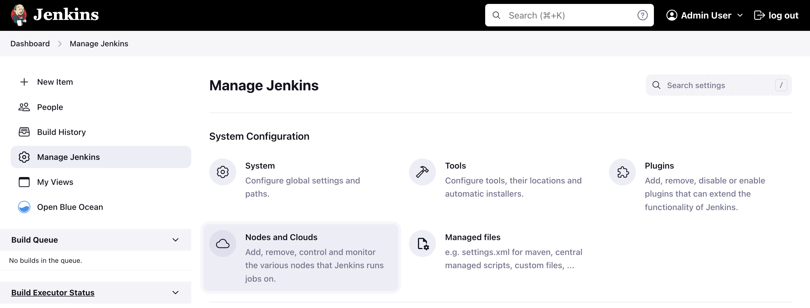
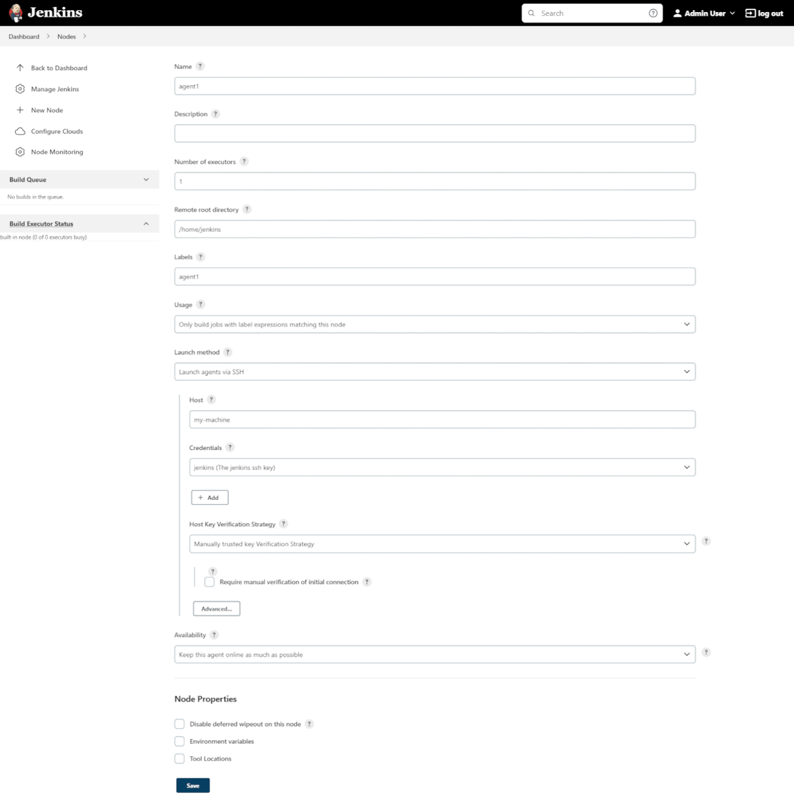
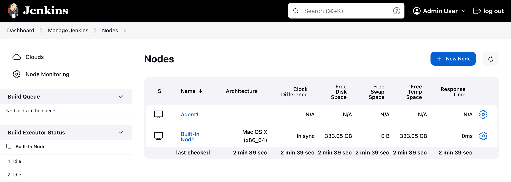
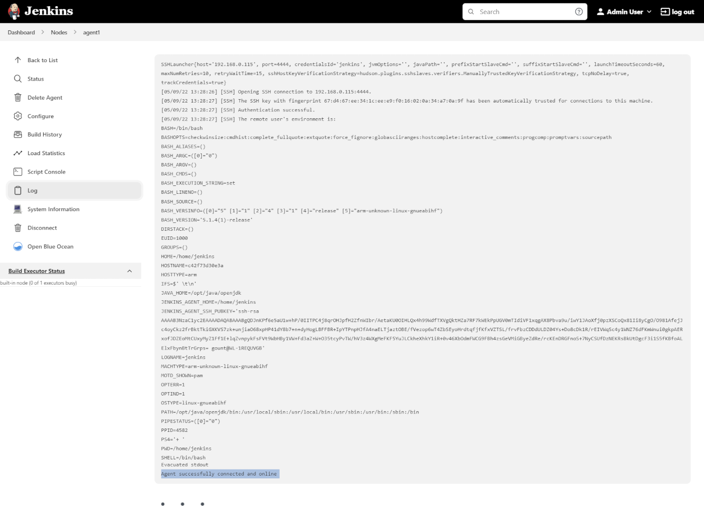
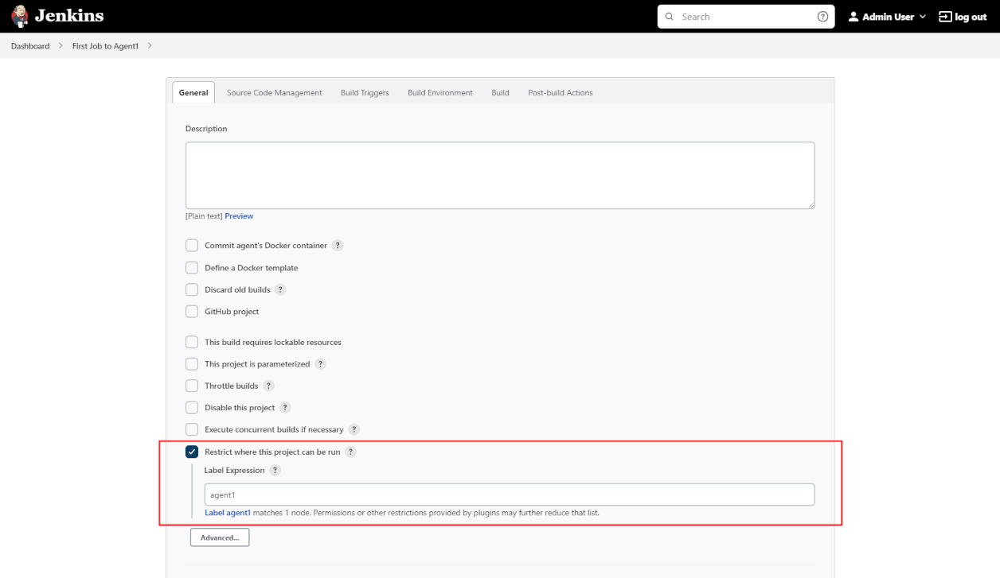
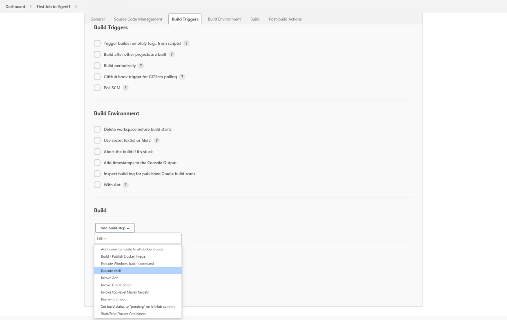
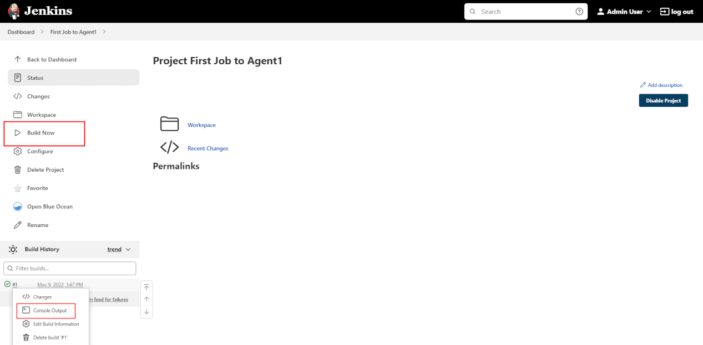

Using Jenkins agents
|
This site is the new docs site currently being tested. For the actual docs in use please go to https://www.jenkins.io/doc. |
The Jenkins architecture is designed for distributed build environments. It allows us to use different environments for each build project balancing the workload among multiple agents running jobs in parallel.
The Jenkins controller is the original node in the Jenkins installation. The Jenkins controller administers the Jenkins agents and orchestrates their work, including scheduling jobs on agents and monitoring agents. Agents may be connected to the Jenkins controller using either local or cloud computers.
The agents require a Java installation and a network connection to the Jenkins controller. View the 3 minute video below for a brief explanation of Jenkins agents.
Configuring agents with Docker
Jenkins agents can be launched in physical machines, virtual machines, Kubernetes clusters, and with Docker images. This section connects Docker agents to Jenkins with SSH.
Environment
To run this guide you will need a machine with:
-
Java installation
-
Jenkins installation
-
Docker installation
-
SSH key pair
|
If you need help to install Java, Jenkins and Docker please visit the section Installing Jenkins. |
Generating an SSH key pair
To generate the SSH key pair, you have to execute a command line tool named ssh-keygen on a machine you have access to. It could be:
-
the machine on which your Jenkins controller runs
-
the host (if using containers)
-
a machine on which you have an agent running
-
or even your developer machine
|
The SSH key pair generation can be done on any operating system:
|
| Note that you will have to be able to copy the key value to your controller and agent afterwards, so check that you can copy a file content into the clipboard beforehand. |
-
In a terminal window run the command:
ssh-keygen -f ~/.ssh/jenkins_agent_key -
Provide a passphrase to use with the key (it can be empty)
-
Confirm the output looks something like this:
ubuntu@desktop:~$ ssh-keygen -f ~/.ssh/jenkins_agent_key Generating public/private rsa key pair. Enter passphrase (empty for no passphrase): Enter same passphrase again: Your identification has been saved in /home/ubuntu/.ssh/jenkins_agent_key Your public key has been saved in /home/ubuntu/.ssh/jenkins_agent_key.pub The key fingerprint is: SHA256:XqxxjqsLlvDD0ZHm9Y2iR7zC6IbsUlMEHo3ffy8TzGs The key's randomart image is: +---[RSA 3072]----+ | o+ | | ...o . | | .o .+ . | | o+.+ o o | | ... o.So* . | | o+ = +.X= | | o oO + *..+ | |. oo.o o .E . | | o... oo.. o | +----[SHA256]-----+
Create a Jenkins SSH credential
-
Go to your Jenkins dashboard;
-
Go to
Manage Jenkinsoption in main menu and click on theManage Credentialsbutton;
-
select the drop option
Add Credentialsfrom the global item;
-
Fill in the form:
-
Kind: SSH Username with private key;
-
id: jenkins
-
description: The jenkins ssh key
-
username: jenkins
-
Private Key: select
Enter directlyand press the Add button to insert the content of your private key file at~/.ssh/jenkins_agent_key -
Passphrase: fill your passphrase used to generate the SSH key pair (leave empty if you didn’t use one at the previous step) and then press the
Createbutton 
-
Creating your Docker agent
On Linux
Here we will use the docker-ssh-agent image to create the agent containers.
-
run the command to start your first agent:
docker run -d --rm --name=agent1 -p 22:22 \ -e "JENKINS_AGENT_SSH_PUBKEY=[your-public-key]" \ jenkins/ssh-agent:alpine-jdk17-
Remember to replace the tag [your-public-key] for your own SSH public key.
-
Your public key value in this example could be found by issuing :
cat ~/.ssh/jenkins_agent_key.pubon the machine your created it. Do not add the square brackets[]around the key value -
The value of [your-public-key] MUST include the full contents of your .pub file, including the
ssh-XXXXprefix.-
Ex:
ssh-rsa AAAAB3NzaC1yc2EAAAADAQABAAAAQQCo9+BpMRYQ/dL3DS2CyJxRF+j6ctbT3/Qp84+KeFhnii7NT7fELilKUSnxS30WAvQCCo2yU1orfgqr41mM70MB
-
-
[#ssh-anchor] If your machine already has a ssh server running on the
22port (if you logged onto this machine thanks to thesshcommand, that’s the case), you should use another port for thedockercommand, such as-p 4444:22
-
-
Now the container
agent1is running.
Hint: the commanddocker pscan be used to check if the container is running as expected.
On Windows
Here we will use the docker-ssh-agent image to create the agent containers.
-
run the command to start your first agent:
docker run -d --rm --name=agent1 --network jenkins -p 22:22 ` -e "JENKINS_AGENT_SSH_PUBKEY=[your-public-key]" ` jenkins/ssh-agent:jdk17-
Remember to replace the tag [your-public-key] for your own SSH public key.
-
Your public key in this example is:
Get-Content $Env:USERPROFILE\.ssh\jenkins_agent_key.pub
-
-
Now the container
agent1is running.
Hint: the commanddocker pscan be used to check if the container is running as expected. Additionally, the commanddocker container inspect agent1 | Select-String -Pattern '"IPAddress": "\d+\.\d+\.\d+\.\d+"'can be used to see the Host to be set in Jenkins for the agent.
Setup up the agent1 on jenkins.
-
Go to your Jenkins dashboard;
-
Go to
Manage Jenkinsoption in main menu; -
Go to
Manage Nodes and cloudsitem;
-
Go to
New Nodeoption in side menu; -
Fill the Node/agent name and select the type; (e.g. Name: agent1, Type: Permanent Agent)
-
Now fill the fields:
-
Remote root directory; (e.g.: /home/jenkins )
-
label; (e.g.: agent1 )
-
usage; (e.g.: only build jobs with label expression…)
-
Launch method; (e.g.: Launch agents by SSH )
-
Host; (e.g.: localhost or your IP address )
-
Credentials; (e.g.: jenkins )
-
Host Key verification Strategy; (e.g.: Manually trusted key verification … ) 
-
-
-
Press the
Savebutton and the agent1 will be registered, but offline for the time being. Click on it.
-
You should now see
This node is being launched.. If that’s not the case, you can now press theRelaunch agentbutton and wait a few seconds. You can now click on theLogbutton on the left, then you should receive
the message:Agent successfully connected and onlineon the last log line.
If your Jenkins controller does not start the agent via ssh, please check the port you configured on your agent.
Copy it, and then click on the Advanced… button.
You will then be able to paste the port number into the Port textfield.
Delegating the first job to agent1
-
Go to your jenkins dashboard;
-
Select
New Itemon side menu; -
Enter a name. (e.g.: First Job to Agent1)
-
Select the
Freestyle projectand press OK; -
Check the option:
Restrict where this project can be run; -
Fill the field: label with the agent1 label; (e.g.: agent1)

Be careful with white spaces before or after the label.
-
Now Select the option
Execute shellat Build Section;
-
Add the command:
echo $NODE_NAMEin theCommandfield of theExecute shellstep and the name
of the agent will be printed inside the log when this job is run; -
press the save button and then select the option
Build Now; -
Wait some seconds and then go to
Console Outputpage
-
you should receive output similar to:
Started by user Admin User Running as SYSTEM Building remotely on agent1 in workspace /home/jenkins/workspace/First Job to Agent1 [First Job to Agent1] $ /bin/sh -xe /tmp/jenkins15623311211559049312.sh + echo $NODE_NAME agent1 Finished: SUCCESS